Stage Three: The Second Level
Note: "Edge piece" means a cubit with two colors that are not yellow in this stage
- Turn the top level until all the colors on Level One are matched with its middle cubit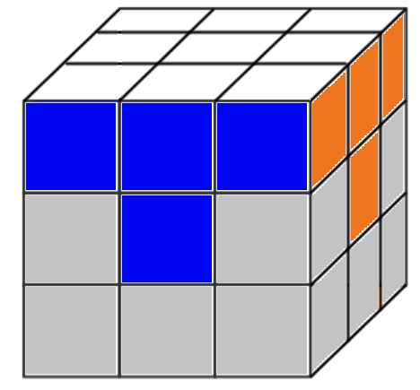
- Orient the cube so that the white face is now the bottom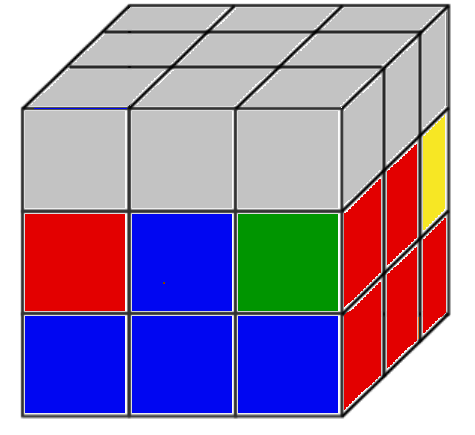
- Pick a color and turn it to face you. Find the edge piece with the matching color on the third level and orient it so the colors match and make a vertical line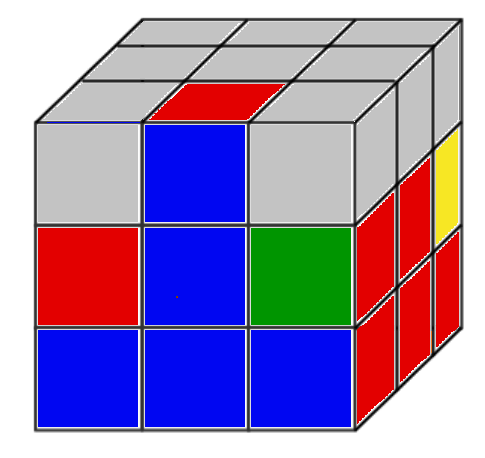
{kind=link}
{kind=link}
{kind=link}
The next moves depend on the color on the top and whether its matching face is to the left of the vertical line, or to the right. In this case the top color has to replace the edge piece that is catty-cornered to the right. There is one algorithm, but for simplicity’s sake we’ll break it into Right and Left
If the color on top has to go catty-corner to the Right:
- Rotate the top to the left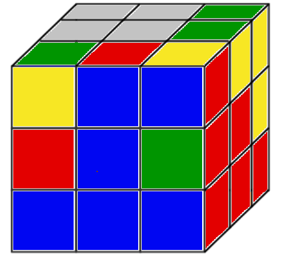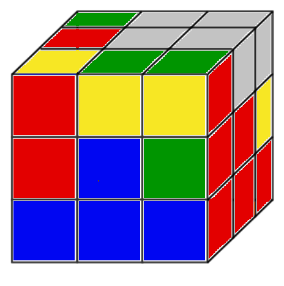
- Turn up the right side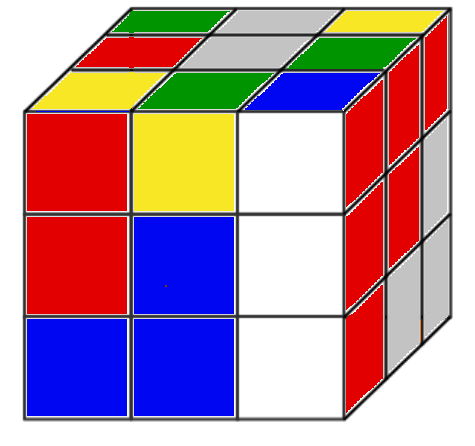
- Rotate the top to the left 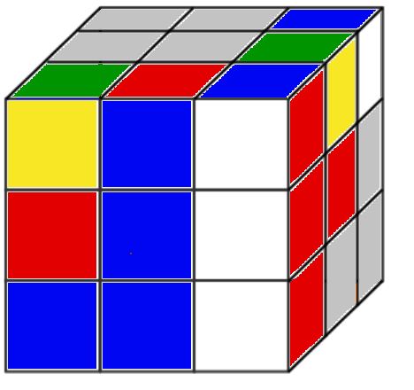
- Right side down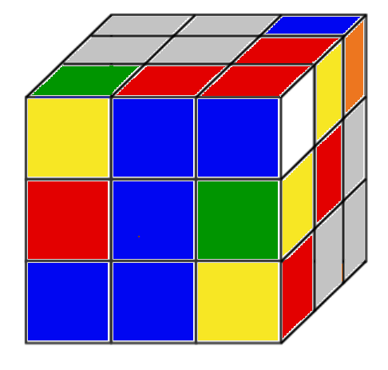
- Top to the Right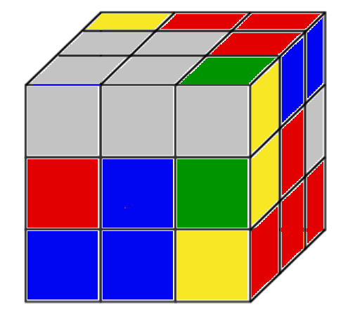
- Face counterclockwise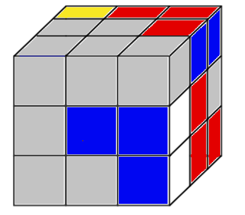
- Top to the left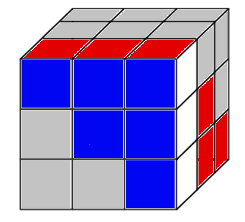
- Face clockwise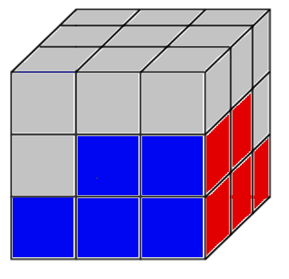
{kind=link}
{kind=link}
{kind=link}
{kind=link}
{kind=link}
{kind=link}
{kind=link}
{kind=link}
{kind=link}
If the color on the top has to go catty corner to the Left:
- Rotate the top to the right
- Turn up the left side
- Rotate the top to the right (hint: the cubit should be lined up in the vertical line again)
- Left side down
- Top to the left
- Face clockwise
- Top to the right
- Face counterclockwise
Edge pieces stuck on the second level in the wrong place
Determine which side it's on then follow the corresponding directions above, except skip step one and do steps 2-8.
After you correct each edge piece, your cube should look similar to this: 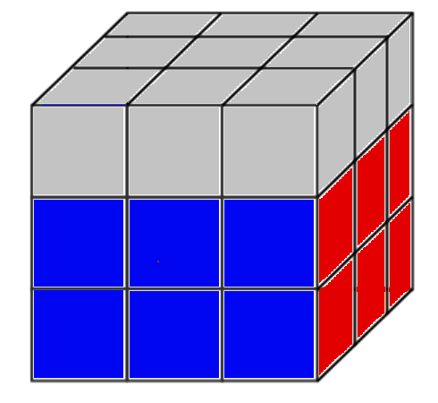
{kind=link}